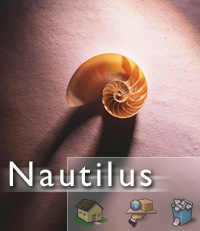

|  |
Nautilus is the official file manager for the GNOME desktop. It is designed to be primarly a file
manager, |
Themes for Nautilus can be found at the following sites:
The Nautilus mailing-list is hosted here on gnome.org. There is one shared mailing list both for
Users and Developers.
You find the archives and subscription page here
There is also a Nautilus IRC channel in irc.gimp.net. It is called #nautilus.
Nautilus supports a high degree of scripting for quickly adding extra functionality. Many users have already taken advantage of this to create lots of nice scripts. You find these scripts on the G-Scripts page on Sourceforge.
Andy Hertzfeld wrote up this page documenting the support for nntp now in Nautilus.
Documentation on how Nautilus themeing work and how you can create your own themes.
Available in html format
and Abiword format.
Alexander Larsson
Darin Adler
Old info
There is still an old page with some info from the Eazel days. You find that page at nautilus.eazel.com.